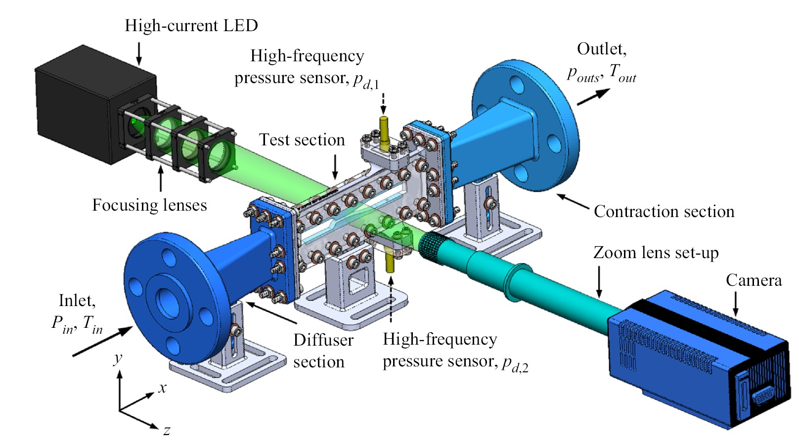
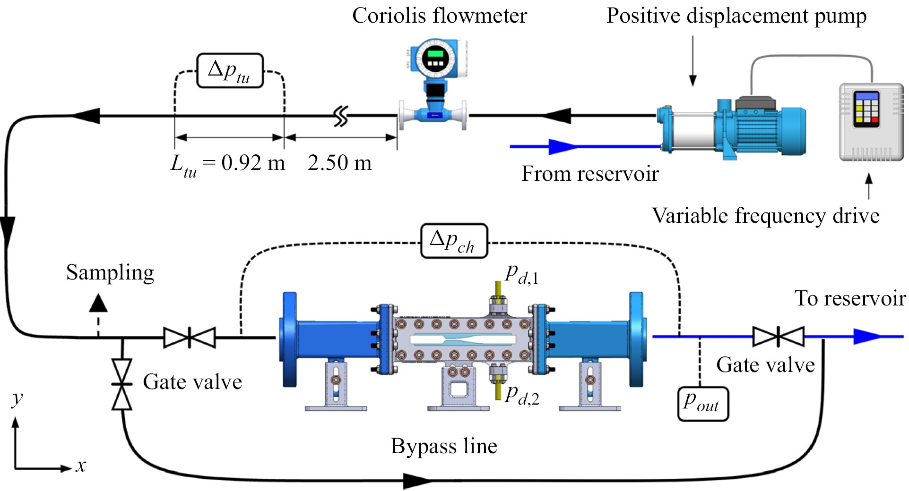
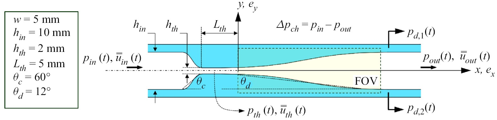
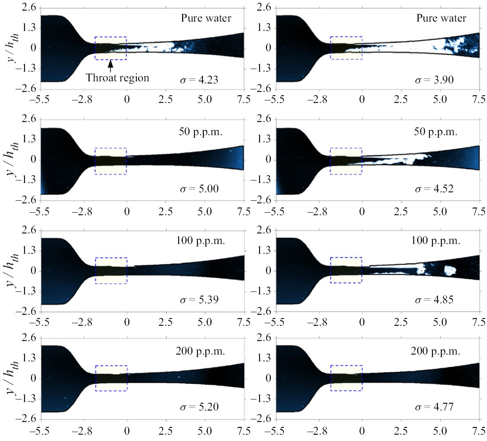
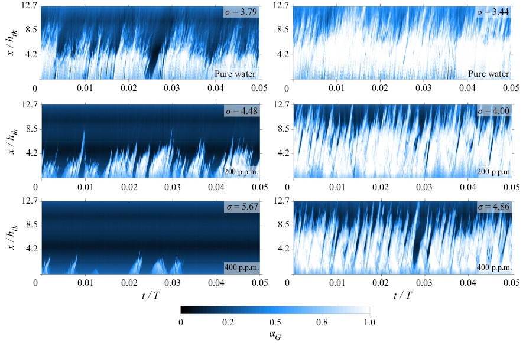

How Flexible Polymers Tame Violent Cavitation
Cavitation begins when local static pressure falls below the liquid’s vapour pressure, triggering the rapid growth of microscopic vapour bubbles. Their subsequent violent collapse can generate destructive shock waves, high-speed liquid microjets, acoustic noise, severe vibration, and material erosion. In this project, I investigated whether adding minute concentrations of flexible polymer molecules could alter this violent process—not simply by increasing bulk viscosity, but by fundamentally modifying how vapour structures grow, collapse, and shed through a turbulent flow.
I designed and commissioned a recirculating mesoscale flow facility centered on a modular converging-diverging nozzle with a 2 mm throat. The system combined interchangeable stereolithography-manufactured components, optically accessible windows, online flow and temperature monitoring, differential and high-frequency pressure sensing, and synchronized high-speed backlit imaging. A parametrically optimized contraction and honeycomb conditioned the incoming stream before entering the nozzle test section.
The modular nozzle geometry was formulated using SolidWorks Flow Simulation, evaluating convergence angles from 24° to 60°, divergence angles from 6° to 24°, throat heights from 1 to 3 mm, and flow rates from 2 to 14 L/min. The selected geometry combined a 60° converging section, 12° diffuser, and 2 mm throat, balancing cavitation regimes against pump performance and optical constraints. The final 3.5-million-cell numerical model predicted throat-wall shear stresses approaching 1,000 Pa under peak operating conditions.
The nozzle, test section, contraction, diffuser, and flow-straightening honeycomb were fabricated using low-force stereolithography (SLA) at 50 µm resolution, followed by optical polishing to ensure smooth hydraulic surfaces. Synchronized backlit imaging recorded 17,000 images at 19 kHz for each flow condition, using an ultra-short 237 ns illumination pulse to freeze high-velocity cavity motion. Simultaneously, dynamic pressure fluctuations were acquired downstream at 125 kHz to connect visual cavity evolution with shedding frequencies and pressure signatures.

Engineering Challenge
Cavitation evolves over microseconds, spans multiple spatial length scales, and couples vapour formation with turbulent flow, acoustic pressure waves, and polymer rheology. Capturing this behavior required synchronized high-speed imaging and dynamic pressure acquisition, precise optical calibration inside a confined transparent nozzle, and a modular flow facility capable of reproducing severe cavitation regimes without rapidly degrading the polymer solutions.
Measurement Principle
Water or polyacrylamide solutions accelerate through the converging-diverging nozzle until local static pressure drops below vapour pressure. High-speed images are processed into spatial vapour-ratio fields, while downstream pressure transducers capture collapse-generated fluctuations. Image statistics, frame-difference analysis, Fast Fourier Transforms (FFT), and continuous wavelet transforms quantify cavity length, growth/collapse intensity, shedding frequency, and regime transitions.
The Experiment at a Glance
- 2 mm nozzle throat: SLA-printed at 50 µm resolution and optically polished.
- 50–400 ppm polymer concentration: Flexible polyacrylamide in water.
- 19,000 frames/sec high-speed imaging: 17,000 images per flow condition.
- 237 ns pulsed illumination: Freezes microsecond cavity dynamics.
- 125 kHz dynamic pressure sensing: Synchronized with high-speed video.
- 30% cavitation length reduction: Achieved at 400 ppm for $Re_{\text{th}} = 4 \times 10^4$.
- ~60–65% collapse reduction: Relaxation of severe growth and collapse fluctuations.
- ~70% lower shedding frequency: Substantial attenuation of inception shedding.
Mechanisms of Cavitation Reduction
In pure water, cavitation developed through rapidly changing sheets, shedding cloud structures, and large supercavitation features. Growing cavities detached from the throat, interacted with downstream structures, and collapsed into intense cloud formations emitting shock waves. Adding polymer molecules fundamentally altered this sequence through three distinct physical mechanisms:
- Shorter and More Stable Vapour Structures: Polymer additives attenuated downstream cavity expansion, shifting peak vapour-ratio fluctuations upstream. At a throat Reynolds number of $Re_{\text{th}} = 4 \times 10^4$, the cavitation length in the 400 ppm solution was reduced by approximately 30% relative to pure water.
- Softer Growth and Collapse Dynamics: Frame-difference statistics separated cavity growth from collapse. At peak cavitation intensity, maximum collapse levels were reduced by ~52% at 200 ppm and ~62% at 400 ppm relative to water, with broader statistical relaxation reaching up to 65%.
- Slower Cavity Shedding Rhythm: FFT and wavelet spectral analysis of pressure signals showed that at cavitation inception, the dominant shedding frequency in 400 ppm polymer solution was reduced by ~70% compared to pure water.
Experimental Setup & Cavitation Dynamics
Purpose-Built Cavitation Facility
Recirculating mesoscale loop integrating a positive-displacement pump, VFD control, online Coriolis flow measurement, and synchronized high-speed optical diagnostics.

Modular SLA Nozzle Assembly
Stereolithography-manufactured converging-diverging insert (2 mm throat, 60° convergence, 12° diffuser) optimized via 3.5-million-cell CFD simulations.

Water vs. Polymer Cavitation Response
High-speed backlit images showing violent cloud cavitation in pure water versus smoothed cavity boundaries and suppressed microbubble populations in polymer solution.

Spatiotemporal & Frequency Analysis
Spatiotemporal vapour-ratio maps, frame-difference collapse statistics, and continuous wavelet transforms quantifying shedding frequency attenuation.

Why the Result Matters
This study demonstrated that polymer additives do more than merely delay the first appearance of cavitation. They fundamentally reorganise the dynamics of the vapour field itself by limiting downstream cavity expansion, softening violent growth-collapse pressure surges, and slowing the characteristic shedding frequency. These insights can guide active flow-control strategies in hydrodynamic systems where cavitation causes noise, destructive vibration, material erosion, or performance degradation.
Journal Publication
R. Azadi and D. S. Nobes, “Hydrodynamic cavitation reduction in semidilute turbulent polymer solution flows,” Journal of Fluid Mechanics, vol. 952, p. A29, 2022.
DOI: 10.1017/jfm.2022.910 | Open Access | Includes supplementary high-speed video sequences.